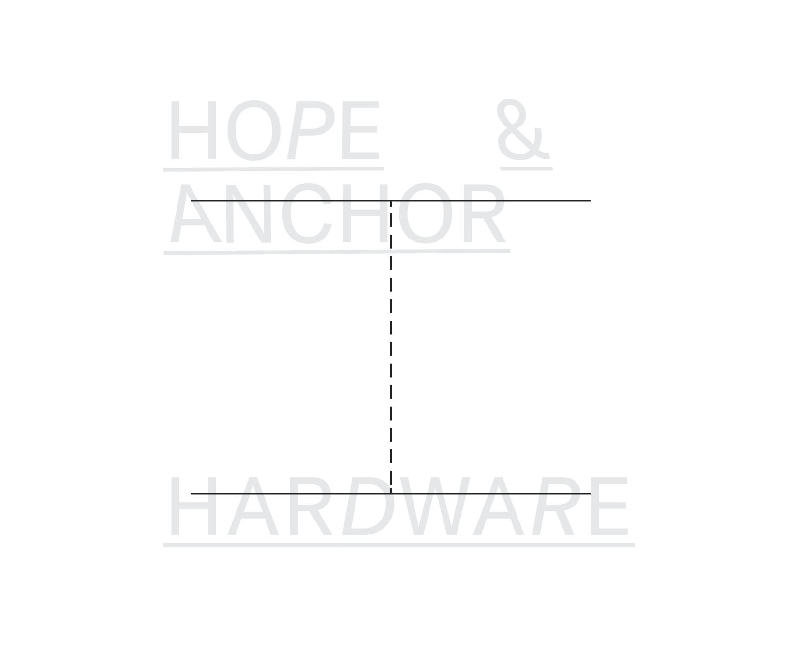
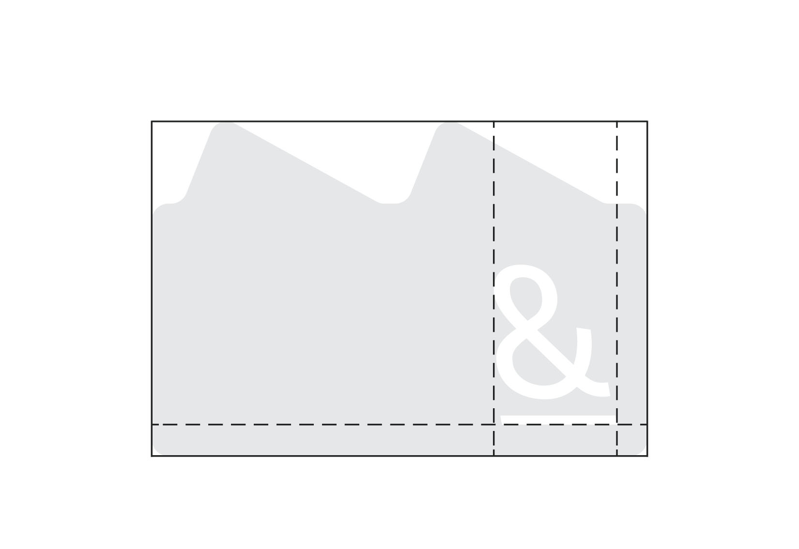
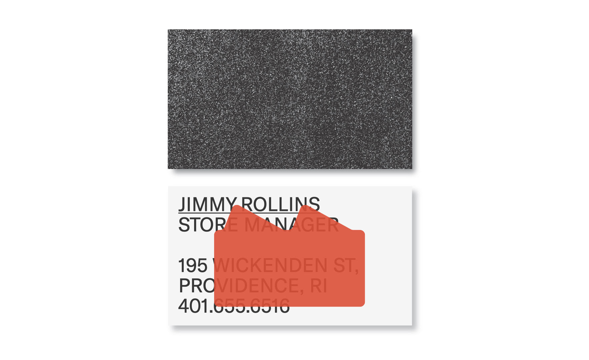
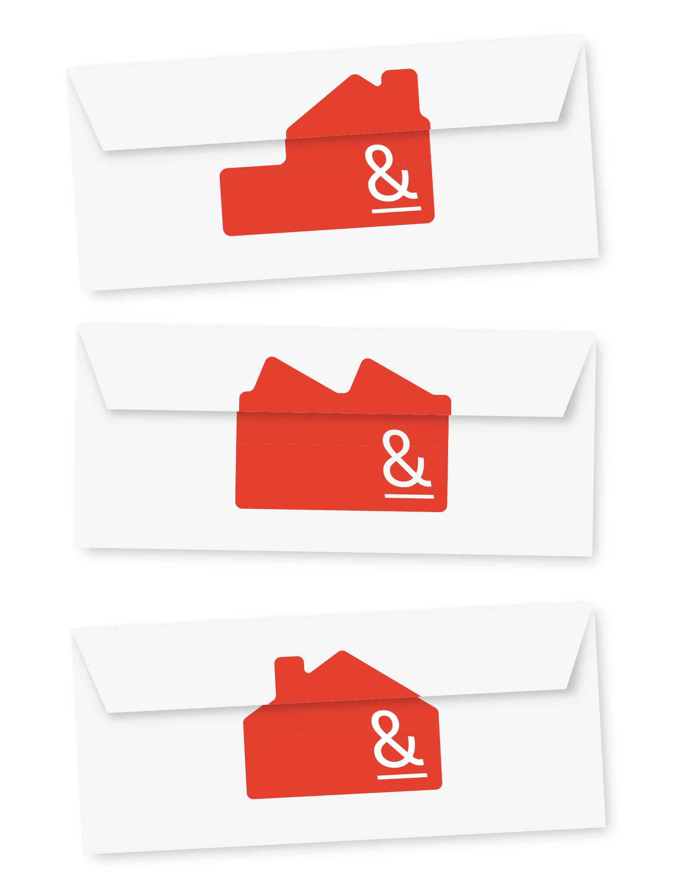
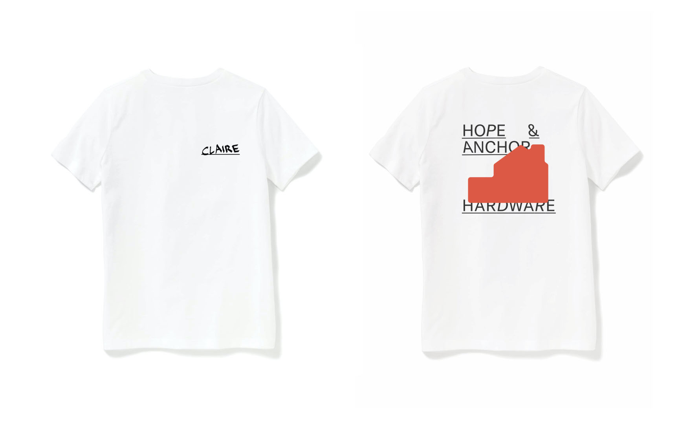
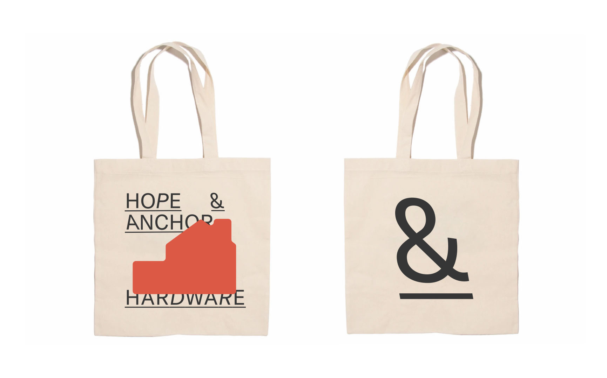
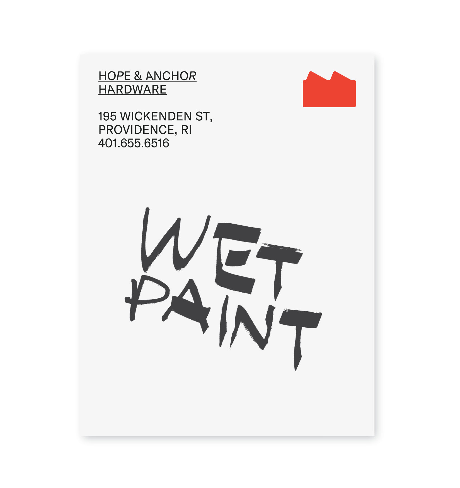
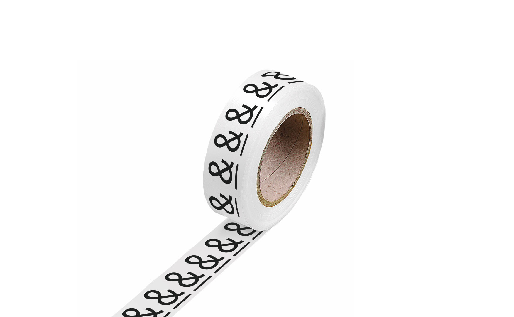
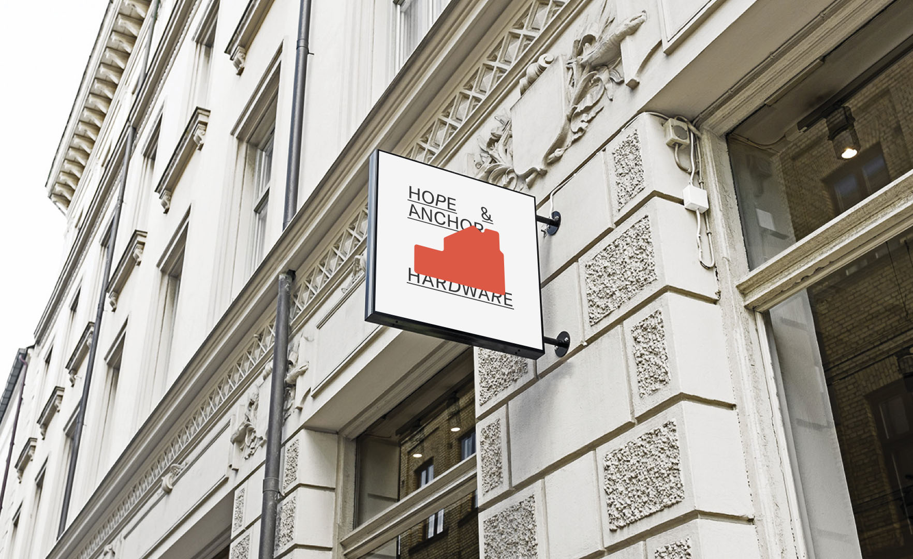

Identity for a fictional Rhode Island hardware store called Hope & Anchor. My concept explores using various home shapes to communicate the idea of diverse backgrounds in the store’s customer base. This assignment was completed for color studio.
        